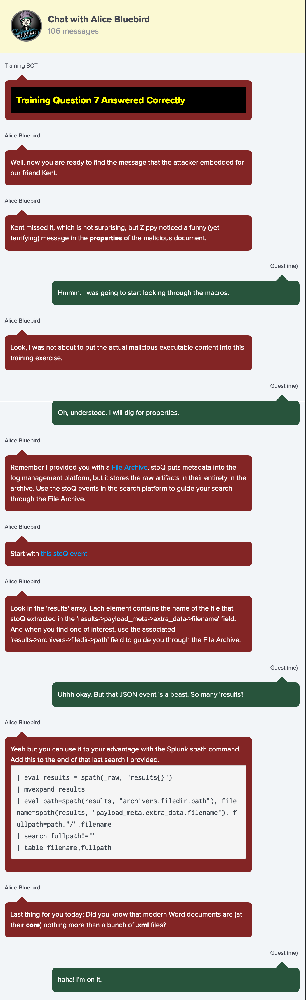

6. Splunk¶
Difficulty: üéÑüéÑüéÑ
üìú Info & Hints¶
Splunk
Access https://splunk.elfu.org/ as elf with password elfsocks.
What was the message for Kent that the adversary embedded in this attack?
The SOC folks at that link will help you along!
For hints on achieving this objective, please visit the Laboratory in Hermey Hall and talk with Prof. Banas.
Chat with Alice Bluebird after solving all training questions

The File Archive contents
You'll find some references to the File Archive contents in Splunk.
Access the raw files or the File Archive link in the navigation.
Starting point
Start with this stoQ event
index=main sourcetype=stoq "results{}.workers.smtp.from"="bradly buttercups <bradly.buttercups@eifu.org>"
| eval results = spath(_raw, "results{}")
| mvexpand results
| eval path=spath(results, "archivers.filedir.path"), filename=spath(results, "payload_meta.extra_data.filename"), fullpath=path."/".filename
| search fullpath!=""
| table filename,fullpath
The message in the properties of the malicious document.
stoQ puts metadata into the log management platform but it stores the raw artifacts in their entirety in the archive.
Did you know that modern Word documents are (at their core) nothing more than a bunch of .xml files
Find The message for Kent that the adversary embedded in this attack
‚ö°Ô∏è Solution¶
-
Given the hints this should be easy, our search query will be:
index=main sourcetype=stoq "results{}.workers.smtp.from"="bradly buttercups <bradly.buttercups@eifu.org>" | eval results = spath(_raw, "results{}") | mvexpand results | eval path=spath(results, "archivers.filedir.path"), filename=spath(results, "payload_meta.extra_data.filename"), fullpath=path."/".filename | search fullpath!="" | table filename,fullpathSearching for emails from
bradly.buttercups@eifu.orgthen extract allfilenamesandfullpathsfrom the result using Splunkspathcommand. -
From the result we find
core.xmlmentioned in the hint:core.xml /home/ubuntu/archive/f/f/1/e/a/ff1ea6f13be3faabd0da728f514deb7fe3577cc4/core.xml
-
Get file from server:
-
Open the file in any text editor, and you will find the message:
<cp:coreProperties xmlns:cp="http://schemas.openxmlformats.org/package/2006/metadata/core-properties" xmlns:dc="http://purl.org/dc/elements/1.1/" xmlns:dcterms="http://purl.org/dc/terms/" xmlns:dcmitype="http://purl.org/dc/dcmitype/" xmlns:xsi="http://www.w3.org/2001/XMLSchema-instance"> <dc:title>Holiday Cheer Assignment</dc:title> <dc:subject>19th Century Cheer</dc:subject> <dc:creator>Bradly Buttercups</dc:creator> <cp:keywords /> <dc:description>Kent you are so unfair. And we were going to make you the king of the Winter Carnival.</dc:description> <cp:lastModifiedBy>Tim Edwards</cp:lastModifiedBy> <cp:revision>4</cp:revision> <dcterms:created xsi:type="dcterms:W3CDTF">2019-11-19T14:54:00Z</dcterms:created> <dcterms:modified xsi:type="dcterms:W3CDTF">2019-11-19T17:50:00Z</dcterms:modified> <cp:category /> </cp:coreProperties>
The answer:
Kent you are so unfair. And we were going to make you the king of the Winter Carnival.
ü뮂Äçüî¨ Dr. Banas
Oh, thanks so much for your help! Sorry I was freaking out.
I've got to talk to Kent about using my email again...
...and picking up my dry cleaning.As you noticed he is the only one coming to the university with short üòÑ!
He actually freaked out and came quickly to fix the problem.
Congratulations! You have completed Splunk challenge! üéâ
üéì What you've learned¶
- Th modern Word documents are (at their core) nothing more than a bunch of
.xmlfiles. - Using Splunk
spathcommand. - StoQ puts metadata into the log management platform but it stores the raw artifacts in their entirety in the archive.
Useful Resources from credit page
Security Tools:
-
stoQ - https://stoq.punchcyber.com
-
PowerShell Empire - https://www.powershellempire.com
-
Microsoft Sysmon - https://docs.microsoft.com/en-us/sysinternals/downloads/sysmon
-
Splunk Enterprise - https://www.splunk.com
Challenge Back End:
- Serverless Stack - https://serverless-stack.com/
Challenge Front End:
-
Chat Widget by Andre Madarang - https://codepen.io/drehimself/pen/KdXwxR
-
December Holiday Color Pallette by gregxor - https://www.color-hex.com/color-palette/58295
-
S3 Bucket Listing by Rufus Pollock - https://github.com/rufuspollock/s3-bucket-listing
-
Splunk Dev for all by David Veuve and Dave Herrald - https://splunkbase.splunk.com/app/4104/
-
CSS Pulse Effect by Floring Pop - https://www.florin-pop.com/blog/2019/03/css-pulse-effect
-
CSS Pin/Unpin Effect by aaronogan - http://jsfiddle.net/aaronogan/45w2p7jz/
-
CSS Checkmark by gliesche - https://codepen.io/gliesche/pen/ZQyPeV
-
CSS Modal by Jumar Muthaliar - https://jsfiddle.net/kumarmuthaliar/GG9Sa/1
-
CSS Snowflake Effect by pajasevi - https://pajasevi.github.io/CSSnowflakes/
-
JavaScript MD5 by BlueImp - https://github.com/blueimp/JavaScript-MD5